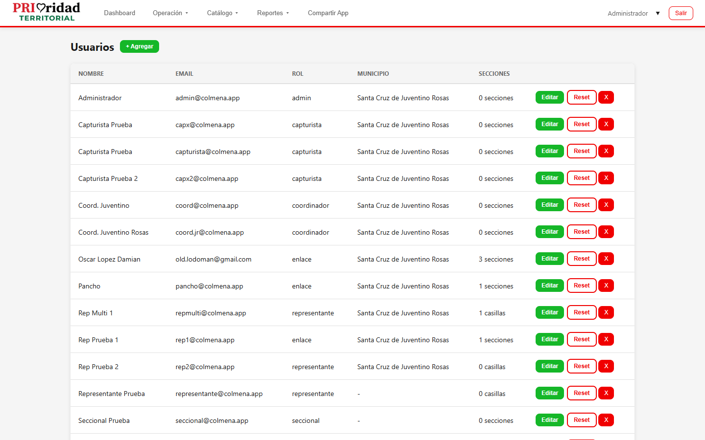
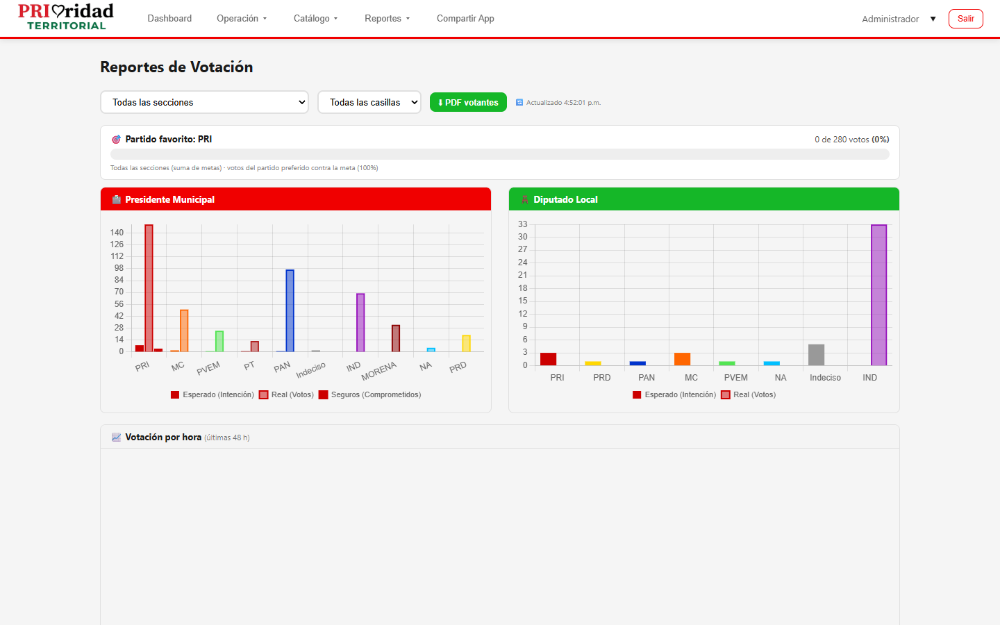

PRIoridad Territorial
Manual del Coordinador
Gestión operativa regional - Usuarios, rutas, campañas y reportes
Versión 1.0 | Agosto 2026
Contenido
Coordinador El Coordinador tiene acceso operativo para gestionar usuarios, crear rutas, campañas y generar reportes. No tiene acceso a configuración del sistema ni auditoría.
1. Vista General del Dashboard
Al iniciar sesión, el dashboard muestra:
- Mapa interactivo con ubicación de enlaces (opcional: checkbox "Ver ubicación de enlaces")
- Estadísticas de la operación: ciudadanos, encuestas, rutas
- Filtros por municipio, sección, fecha

2. Gestión de Usuarios
Acceso: Menú usuario → Usuarios
2.1 Crear usuario
1 Ve a Usuarios.
2 Toca "Nuevo usuario".
3 Completa: nombre, email, contraseña, rol, municipio, sección (si aplica), teléfono.
4 Toca "Guardar".
Roles disponibles: Puedes crear enlaces, capturistas, seccionales y representantes. Los roles de administrador y coordinador solo pueden ser creados por un administrador.
2.2 Editar/Desactivar usuario
1 En la tabla de usuarios, toca el icono de editar (lápiz) o eliminar (cruz).
2 Realiza los cambios y guarda.

3. Catálogos
Acceso: Menú Catálogo
Puedes administrar:
| Catálogo | Acción |
|---|---|
| Estados | Crear, editar, eliminar |
| Municipios | Crear, editar, eliminar (asociados a estado) |
| Secciones | Crear, editar, eliminar (asociadas a municipio) |
| Casillas | Crear, editar, eliminar (asociadas a sección) |
| Partidos | Crear, editar, eliminar |
| Discapacidades | Crear, editar, eliminar |
| Ocupaciones | Crear, editar, eliminar |
| Estatus de Visita | Crear, editar, eliminar |
4. Campañas
Acceso: Menú Campañas
4.1 Crear campaña
1 Ve a Campañas.
2 Toca "Nueva Campaña".
3 Define: nombre, tipo (encuesta/barrido), fecha inicio, fecha fin.
4 Publica la campaña para que esté disponible.
5. Encuestas
Acceso: Menú Encuesta
1 Ve a Encuesta.
2 Crea preguntas con sus opciones de respuesta.
3 Asocia las preguntas a una campaña.
6. Creación de Rutas
Acceso: Menú Rutas
6.1 Crear ruta
1 Ve a Rutas.
2 Toca "Nueva Ruta".
3 Define:
- Nombre de la ruta
- Tipo: Encuesta, Seguros o Filtro
- Enlace asignado
- Campaña asociada
4 Selecciona las paradas en el mapa o por sección.
5 Guarda la ruta.

7. Ciudadanos Comprometidos
Acceso: Menú Ciudadanos
Como coordinador puedes gestionar ciudadanos comprometidos:
- Crear nuevo comprometido
- Editar información existente
- Solicitar corrección a un capturista
- Ver duplicados detectados por el sistema
8. Importación desde Excel
Acceso: Ciudadanos → Importar desde Excel
1 Ve a Ciudadanos.
2 Toca "Importar Excel".
3 Selecciona el archivo Excel con los datos.
4 El sistema importará los ciudadanos comprometidos.
9. Reportes
Acceso: Menú Reportes
| Reporte | Descripción | Formato |
|---|---|---|
| Votación | Resultados por sección/casilla | Excel |
| Respuestas Encuesta | Resultados de encuestas | Excel |
| Ciudadanos | Listado de ciudadanos | Excel |
| Cumplimiento de Rutas | Avance de rutas | Excel |
